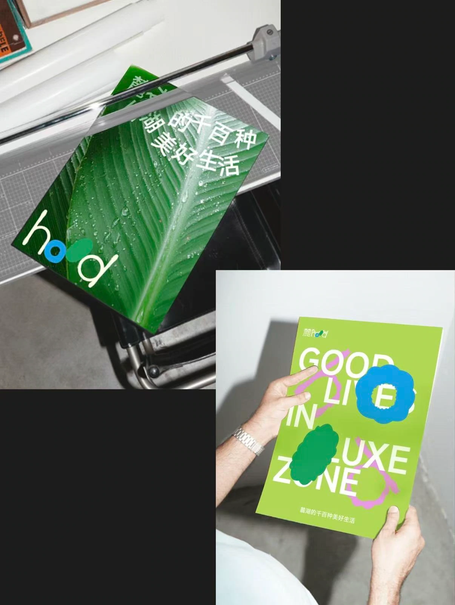
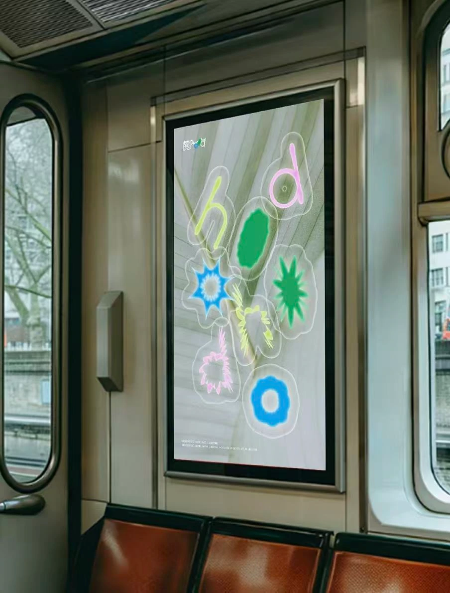
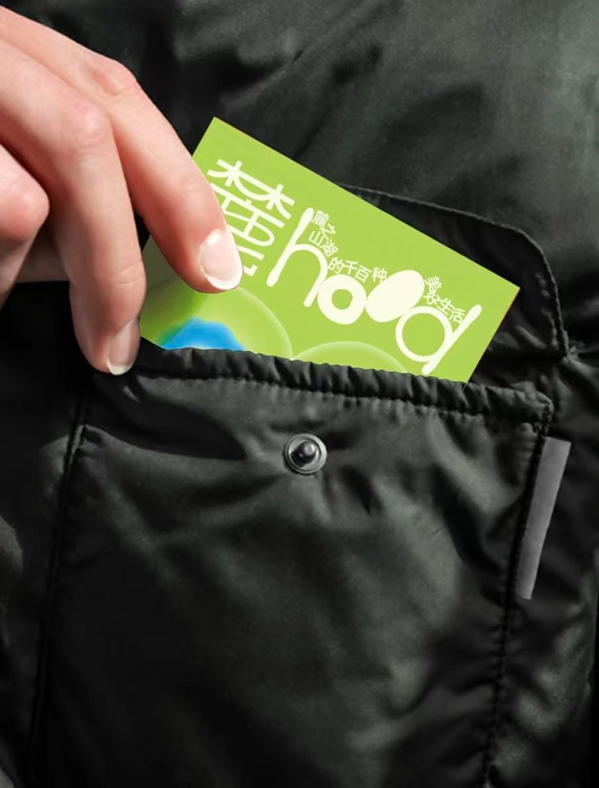
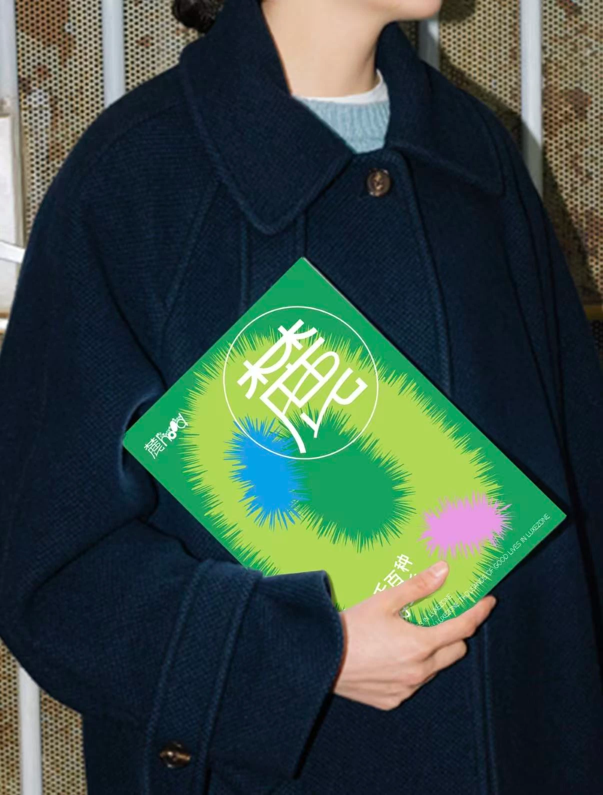

LU HOOD / BRAND DESIGN
麓 hood
麓湖的千百种
美好生活。THOUSANDS OF GOOD LIVES IN LUXEZONE
品牌识别 / 图形语言 / 视觉应用探索这个项目 ↓

01 / BRAND IDENTITY
从自然出发，
让日常有更多可能。
把叶脉、露珠与自然形态融入品牌表达，以灵活组合的 hood 字母、鲜明的绿蓝粉色彩，形成自由而轻盈的视觉语言。
从主视觉、系列图形到纸品与场景应用，让“麓湖的千百种美好生活”拥有连贯的识别线索。
- 品牌
- 麓 hood
- 项目内容
- 标志组合与图形语言
海报与品牌物料
纸品和场景应用


02 / IN EVERYDAY LIFE
把美好生活，
带进具体的场景。
海报、品牌卡片与纸品延展到印刷、公共展示和随身物件，在不同尺度中保留清晰的品牌气质。







